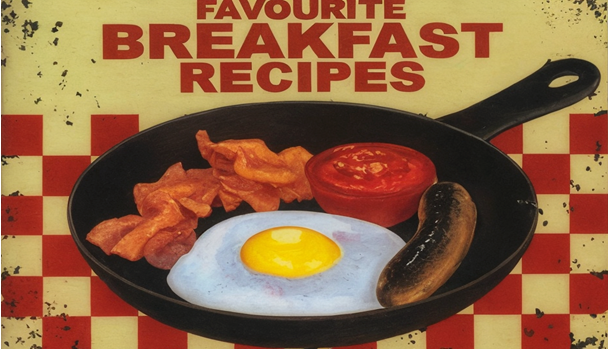

Тонкая грань между PR и манипуляцией: кейс Эдварда Бернейса
PR умеет блистать. Он привлекает и убеждает, а порой делает это так искусно, что мы даже не замечаем, как меняется наше мнение. И тут появляется закономерный вопрос: где заканчивается честное убеждение и начинается манипуляция? Как не перейти ту самую грань? Чтобы разобраться, стоит вернуться к человеку, с которого всё началось. И это Эдвард Бернейс.
Многие знают его как племянника Зигмунда Фрейда, основателя психоанализа. Но, кроме того, он еще тот самый человек, который одним из первых всерьёз начал использовать психологию для управления общественным мнением. Он не просто занимался связями с общественностью, а буквально создал это понятие. Бернейс не стремился продать конкретный товар, он менял привычки широкой массы людей, формируя ценности и потребности. Если же изучить его работы, то можно выделить некоторые ярко прослеживающиеся идеи:
- Массовое сознание действует не рационально, а под влиянием эмоций, автоматических реакций и устоявшихся шаблонов.
- Люди чаще принимают решения, ориентируясь на авторитетных лидеров, а не на самостоятельный анализ.
- Слова и выражения несут не только смысл, но и эмоциональные ассоциации, что позволяет влиять на восприятие.
- Многократное повторение формирует устойчивые убеждения и модели поведения.
- Ценность вещей определяется не их практической полезностью, а тем, какие образы и ассоциации они вызывают.
Его идеи каждый воспринимал по-своему: одни – восхищались, другие – презирали. Мы же предлагаем проследить как они реализовывались в процессе его деятельности и какие результаты это дало обществу.
Балет как национальное событие
Когда русский балет Сергея Дягилева в далеком 1915 году посетил США, публика встретила его прохладно. Все потому, что балет не был типичным танцем в их культуре и воспринимался как что-то эфемерное, чуждое, «неамериканское». Но Бернейс увидел в этом вызов.
Он направил свои усилия на популярное в то время средство массовой информации: журналы. И не просто выпустил в них новость о балете, а проработал свою пиар кампанию на всех уровнях. Что это значит? Для женских изданий новость пестрила рассказами о пластике и изяществе балерин, закрывая потребность женщин в эстетике. Для мужских журналов такой подход бы уже не сработал, потому в них он пустил новость о силе, выносливости и мужественности танцоров. Искусствоведческие журналы получали вовлекающие истории о костюмах, композиторах.
Он даже изменил длину юбок на промо-фото, удлинив их для консервативной и придирчивой аудитории. И какой итог? Впечатляющий. Балет стал масштабным культурным событием, а билеты большим дефицитом. Этот кейс говорит нам о том, как правильно выстроенное позиционирование способно изменить общественное восприятие продукта и повлиять на окупаемость бизнеса.
Табачная продукция как символ свободы
Помня свой успех с балетом, Бернейс решил повторить его, однако направление, которое он выбрал, до сих пор вызывает споры и противоречия. В 1929 году он провёл одну из самых противоречивых кампаний своего времени. Курение среди женщин в США тогда считалось неприличным. Но табачные компании искали новые рынки сбыта. И очень удачно нашли специалиста, способного взломать социальное табу.
Сначала Бернейс проконсультировался с психоаналитиком, который с радостью направил его мысли в гармоничный посыл: табак нужен женщинам не просто как плохая привычка, а как символ свободы и независимости. Вооружившись посылом, он организовал парад в центре Нью-Йорка, где женщины шествовали с «факелами свободы». Эти образы подхватили СМИ, так общество заговорило о правах женщин, а продажи кампаний возросли. Стоит ли говорить, какое влияние это имело на общественные нормы и можно ли считать этот кейс успешным, вопрос, открытый до сих пор.
Завтрак, созданный по заказу

Если при упоминании американцев у вас сразу появляются ассоциации с беконом и яйцами, то это тоже заслуга Бернейса. Долгое время их рацион был такой, пока не появился интерес к здоровому питанию, а рацион не становился все более легким.
Мясоперерабатывающие компании такому исходу были не рады и отчаянно искали пути, которые помогут увеличить потребление бекона среди местных.
Что сделал Бернейс? Провёл исследование, в ходе которого выявил, что плотный завтрак увеличивает энергию и общее состояние в течение дня. А дальше дело оставалось за малым – пригласить авторитетных врачей того времени и заручиться их поддержкой, составить пресс-релиз и отдать его в прессу. С подписью известных и уважаемых врачей того времени, новость быстро получила резонанс в обществе, которому методично вложили в головы мысль: бекон и яйца — основа правильного начала дня. Благодаря чему рацион стал культурной нормой жителей, хотя изначально вся кампания была выдумана для увеличения продаж.
Здесь можно ярко отследить прием, который и сегодня работает в рекламе: обоснование через экспертное мнение. Но, как и сейчас, остается открытым вопрос того, где правда, а где спонсированный авторитет?
«Отравленный сэндвич» в научной обертке
Один из самых неоднозначных инструментов, которые применял Бернейс — это публикации, маскирующиеся под независимые исследования. Такие, взглянув на которые, читатели искренне считали, что это научно доказанные исследования. Тогда как между строк то и дело можно было прочесть в них интерес клиента.
Подставные эксперты, полноценные комитеты, от имени которых публиковались «рекомендации». Неизменно оставалось одно. Реклама как таковая уходила в тень, уступая место доверительным формулировкам и вымышленным цифрам. Этот приём позже получил собственное название: «отравленный сэндвич». Польза и наука снаружи, скрытая реклама внутри, стоит чуть углубиться.
Звучит знакомо и вызывает ассоциации, верно? Все потому, что этот подход активно используется в наше время в виде нативной рекламы у инфлюенсеров. Это не хорошо и не плохо, когда четко можно отследить насколько прозрачно обозначены интересы. У Бернейса же эта грань стиралась нарочно.
Самопиар как стратегия и размытые границы
Бернейс был не только мастером работы с общественным мнением, но и отличным маркетологом самого себя. Чтобы прибавить себе значимости в глазах других людей, он постоянно подчеркивал свою связь с Фрейдом. Вёл себя с достоинством, чтобы создать вокруг себя ореол авторитетности. Не скрывал своих даже самых противоречивых кейсов, и открыто писал книги о своей работе. За все это его прозвали отцом PR.
Знаковой стала его книга, выпущенная в 1929 году, которая получила название «Пропаганда». В ней он не стесняется прямо писать про влияние на массы, утверждая, что это никакие не манипуляции, а лишь качественный инструмент социальной организации. После ее успеха на него обратили внимание в медийном пространстве: его стали приглашать крупные корпорации, чаще обращаться за услугами.
Бернейс же искренне был уверен, что своей деятельностью делает благо: помогает обществу структурировать информацию, формировать мнения, адаптироваться к новому. Но критики, особенно журналисты, считали иначе, ведь нити влияния в его руках были невидимыми. Бернейс не отрицал этого и сам называл себя «невидимым дирижёром». Считал, что в хаосе информации людям нужен ориентир. И если этот ориентир выстраивает профессионал, то это благо.
Вывод
Можно ли однозначно сказать, что Бернейс творил зло или благо? Однозначного ответа нет. Важно понимать всем компаниям, занимающимся брендингом, маркетингом или стратегическим PR, как тонка грань между тем, чтобы помочь аудитории разобраться, и чтобы незаметно подтолкнуть её к нужному решению. И ответить для себя на вопросы: можно ли ставить интересы бизнеса выше интересов общества? А если компания продвигает вредный продукт, кто тогда отвечает за последствия?
Эдвард Бернейс научил нас главному: сила слова и образа колоссальна. Но с ней приходит и ответственность. Манипуляция или мастерство часто не вопрос техники, а вопрос намерений.
Бернейс дал нам инструменты. Как ими пользоваться — зависит от нас.
Автор статьи: smm-специалист Наталия Трухачева